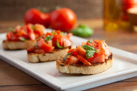

Bruschetta

Description
Bruschetta is a famous Italian dish made with French or Italian loaf and topped with your favorite dressing. In this recipe, the dressing is prepared from tomatoes, garlic, cheese, and basil. Garlic Tomato Bruschetta can be a great brunch or breakfast option with your friends.
Ingredients
- 1/4 cup extra virgin olive oil
- 1 teaspoon black pepper
- 3 cloves minced garlic
- salt as required
- chopped basil as required
- 4 tablespoon grated parmesan cheese
- 1 baguette
- 3 large diced tomato
Steps
- Combine the spices in a bowl
- Toss the tomatoes into the spice mixture
- Toast the bread slices
- Top the bread slices with the mixture